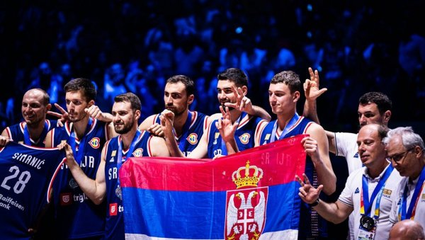
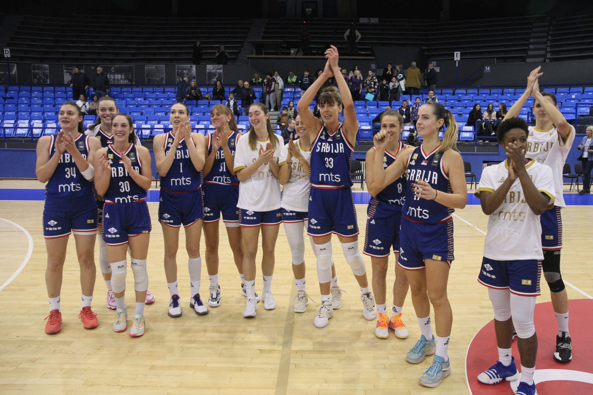
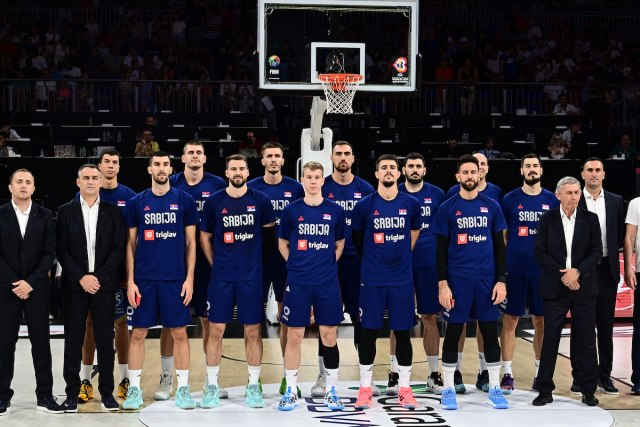
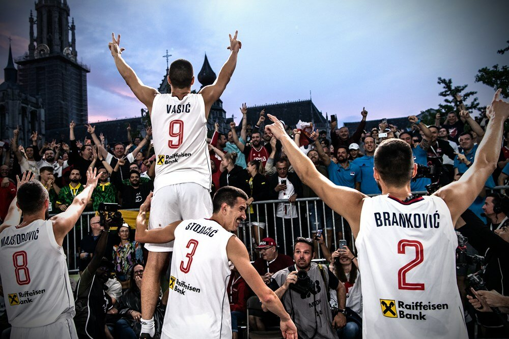

Pregled završnica i aktuelnih mečeva naših selekcija




| Ime | Odigrane utakmice | Medalje | Prosečni poeni po meču |
|---|---|---|---|
| Bogdan Bogdanović | 180 | 6 | 15 |
| Nikola Jokić | 170 | 7 | 18 |
| Vanja Marinković | 120 | 3 | 10 |
| Filip Petrušev | 80 | 2 | 12 |
| Aleksa Avramović | 100 | 1 | 9 |
| Nikola Jović | 60 | 0 | 8 |